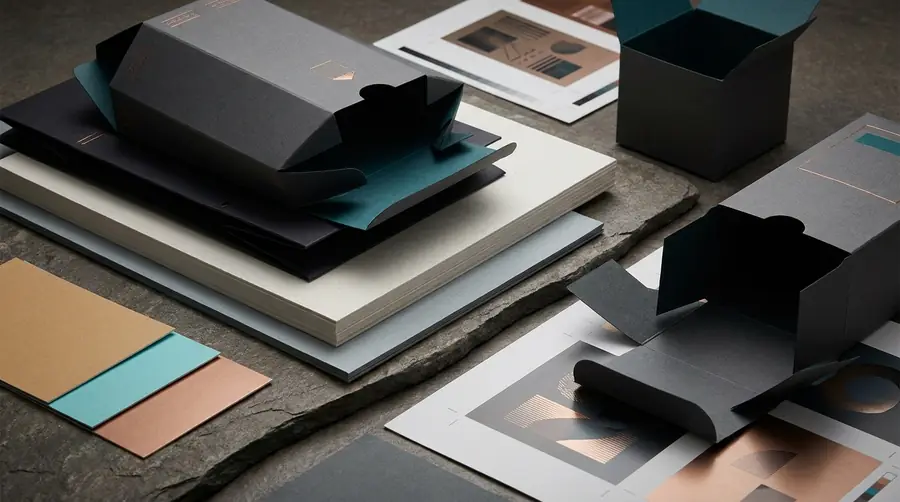

PROCESS ARCHITECTURE
Production Methods
How the work is produced. HDC routes projects through verified commercial print processes according to confirmed surface, substrate, geometry, artwork readiness, and intended handling.
HOW THE WORK IS MADE
Process follows the physical job.
HDC operates distinct commercial print production methods. Each method has specific material interactions, substrate requirements, and suitability boundaries.
Final production routes are determined after reviewing the actual application, surface geometry, substrate characteristics, artwork specifications, and production run.
Explore commercial servicesUV DTF Transfer for confirmed hard surfaces and precision labels.
↓Direct Object / UV Flatbed printing onto qualified rigid substrates.
↓Offset Lithography for commercial packaging, stationery, and publications.
↓Large Format Digital for retail environments, signage, and displays.
↓DTF Textile Transfer for suitable fabric and garment applications.
↓PRODUCTION METHOD — 01
UV DTF Transfer
A transfer-based production method designed for selected hard-surface applications, crisp multi-colour reproduction, and high-adhesion decal placement without direct substrate feeding.
- What it doesPrints UV-cured ink and clear protective varnish onto release film, creating durable, high-adhesion transfers for application onto finished three-dimensional objects and rigid surfaces.
- Best-considered applicationsBranded glassware, ceramics, anodised aluminium, acrylic objects, electronic housings, promotional hard goods, and selective packaging accents.
- Material & surface contextClean, non-porous, rigid or semi-rigid surfaces. Smooth or gently curved geometries provide optimal contact area.
- Suitability & review factorsSurface energy, coating compatibility, curvature radius, and intended mechanical wear must be evaluated. No universal adhesion claim is made without sample verification.
- Related servicesSTICKERS, LABELS AND DECALS, Products & Object Printing

PRODUCTION METHOD — 02
Direct Object / UV Flatbed Printing
Direct-to-substrate printing using UV-curable inks onto rigid media, architectural materials, and dimensioned object blanks where direct bed registration is mechanically viable.
- What it doesDeposits UV-curable inks directly onto the workpiece surface, instantly curing under UV exposure for precise dot placement, multi-pass opacity, and structural registration.
- Best-considered applicationsWood panels, architectural stone, metal plaques, acrylic sheets, industrial identification plates, and rigid presentation boards.
- Material & surface contextDimensionally stable flat or shallow-relief substrates. Surface cleanliness, pre-treatment requirements, and flatness tolerance govern print fidelity.
- Suitability & review factorsObject height clearance, edge squareness, surface tension, and handling requirements must be confirmed against actual job geometry.
- Related servicesProducts & Object Printing, Large Format & Brand Environments

PRODUCTION METHOD — 03
Offset Lithography
High-fidelity commercial sheetfed print production delivering consistent ink density, precise micro-registration, and scalable volume efficiency across commercial papers, folding cartons, and board stocks.
- What it doesTransfers ink from imaged plates to rubber blankets and onto sheetfed paper or board, delivering razor-sharp typographic definition, smooth tints, and controlled colour balance.
- Best-considered applicationsProduct packaging, folding cartons, presentation folders, corporate stationery, brochures, catalogues, and commercial collateral.
- Material & surface contextCoated and uncoated papers, rigid boxboard, kraft stocks, and specialised packaging paperboards from standard text weights to heavy folding boxboard.
- Suitability & review factorsEconomic run length, sheet grain direction, die-line geometry, finishing tolerances (creasing, foil stamping, lamination), and ink-drying parameters.
- Related servicesPackaging & Commercial Print

PRODUCTION METHOD — 04
Large Format Digital Printing
Wide-format roll-to-roll and architectural graphics printing for retail display installations, environmental branding, exhibition graphics, and exterior signage.
- What it doesDelivers wide-gamut digital output across continuous flexible substrates with controlled droplet architecture for high visual impact at both architectural viewing distances and close inspection.
- Best-considered applicationsRetail window graphics, wall murals, trade exhibition backdrops, backlit displays, point-of-sale graphics, and architectural brand installations.
- Material & surface contextSelf-adhesive vinyl films, banner media, backlit film, canvas, and textured architectural films engineered for indoor and outdoor exposure.
- Suitability & review factorsViewing distance, ambient lighting, surface curvature, surface preparation, installation environment, and expected display lifespan.
- Related servicesLarge Format & Brand Environments

PRODUCTION METHOD — 05
DTF Textile Transfer
Direct-to-Film transfer production for flexible textile substrates, providing opaque white underbases, saturated pigment inks, and heat-activated polymer adhesion across diverse garment fabrics.
- What it doesPrints pigmented water-based inks and an opaque white backup layer onto PET film, coats the wet ink with hot-melt adhesive powder, and heat-cures it into a ready-to-transfer graphic.
- Best-considered applicationsCustomised corporate apparel, branded workwear, cotton and poly-blend garments, tote bags, caps, and flexible fabric merchandise.
- Material & surface contextNatural cottons, synthetic polyesters, blended weaves, canvas, and structured garment panels.
- Suitability & review factorsFabric elasticity, weave density, heat sensitivity, wash-temperature requirements, and press dwell time. Exclusively positioned as a production process; not a standalone commercial service family.
- Related servicesApplications — Events & Personalisation

DETERMINE THE ROUTE
Start with your surface and artwork.
Share your application, quantity, dimensions, surface or substrate, and artwork readiness. HDC will identify the verified production method best suited to the job.